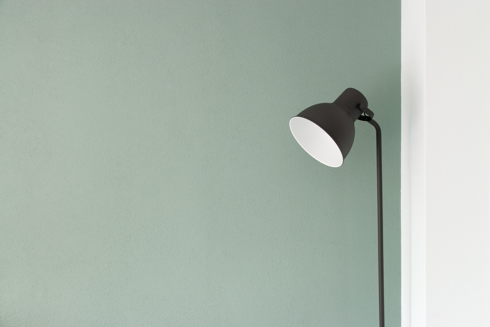

hello
Welcome to my little nook of the web, a personal website designed by me, a novice. It's wild to think that without having any sort of background in computer science I've been able to dive into this digital world and create something like this. I've only ever explored science from a biological standpoint, growing up I didn't find the computer realm all that exciting. However in this day in age it's awesome to see how creative this field can be, I think that is one of the aspects of computer science that appeals to me most. I cant wait to learn more!
